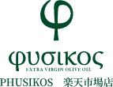
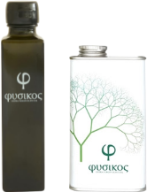
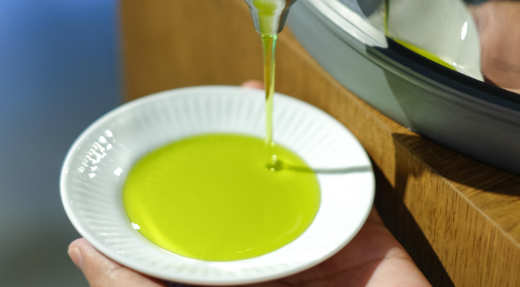
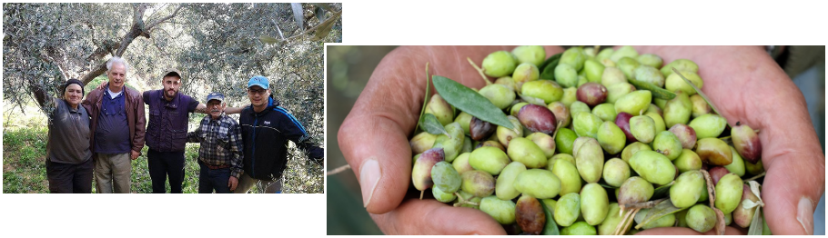
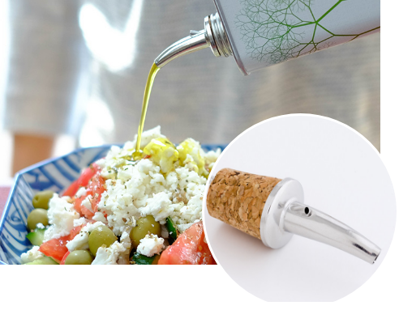

ギリシャ・クレタ島は、6000年前に世界で初めてオリーブが栽培されたとされている地です。 その時代の樹が離島のクレタ島で繁殖し続け、今に至るまで脈々と同じDNAが受け継がれています。
その木々を大切に丁寧に育ててきたのがシラキスファミリー。
伝統製法を守りながら、自然農法で栽培を行うことで世界一と称えられてきたオリーブオイルの品質を守り続けています。
『フシコス』のもうひとつのファミリー、日本の油屋。福岡県で明治時代から続く老舗です。
現在、4代目当主が原料や製法にこだわった胡麻油やなたね油をつくって販売しています。
油は本来、光・酸素・熱を嫌う食品。永年にわたって油
を知りつくした経験を活かしギリシャで缶に詰め、密閉・空輸されたエキストラヴァージンオリーブオイルを 日本で徹底管理し責任を持って小分け缶にボトリングしています。
日本とギリシャの歴史を受け継ぎ生まれたのがフシコスなのです。

クレタ島オリーブ農家
日本の老舗油屋
FAMILY
ファミリー
- F
Father
- A
And
- M
Mother
- I
I
- L
Love
- Y
You

thought
想い
『これからの世代のために本物の食を残したい。』
これがフシコスの想いです。
オイルに限らず、工業製品のように「製造された食品」が溢れかえっている中、
安心で安全なものを家族に食べさせたいと思う気持ちは多くの人の共通の願い。
フシコスが理想とする食生活、それはクレタ島の人々が守り続けている
オリーブオイル中心の健康的な食事とライフスタイル。
その実現のため、『フシコス』は現地でしか味わうことのできない
ギリシャ農家から直接届いた自然のままのエキストラヴァージンオリーブオイル
を届け続けます。

origin
ブランド名の由来
創業者デミトリがまず考えたのは、美しい、永続的な名前にしたいということ。
故郷であるギリシャの古い哲学や美術について調べるにつれ
「人間にとって最も安定し、美しい比率とされる黄金比を使った名前に」
というコンセプトが決まりました。
黄金比は自然界での植物の葉、巻き貝のアーチ、パルテノン神殿、芸術の世界
ではモナリザ、 現代では名刺サイズ、アップル社のロゴで採用されています。
コンセプトが固まると次は具体的な商品名の決定。
黄金比を表すギリシャ文字「φ」（フィ、英語でファイ）を
用いることにしました。
日本でも発音しやすいもの、ロゴ配置のバランスのよいもの・・と
いくつかの条件をもとにアイデアを重ね、
ついに「自然」という意味の「フシコス φυσικος」が生まれました。

Quality
品質
ギリシャ固有のコロネイキ種を100％使用。
品質- Quality -
フシコスは、ギリシャ固有のコロネイキ種を100％使用。1,000種類以上あるオリーブ品種のなかでもとりわけオレイン酸と
ポリフェノールの含有量が多く、最も酸化しにくい品種として知られています。
米国カリフォルニア大学とスペインIRTA（カタロニア農業技術研究所）の調査で
最も酸化しにくいオリーブ品種の一つとして確認されています。


製法- Manufacturing method -
フシコスの品質を実現するのは、その製法。
『フシコス』はただ、自然の時間にゆだねるだけ。
丁寧に収穫した出来立ての果実は、12時間以内に洗って砕き、風味を損なわないようにペースト状になるまで撹拌。
その後、光・空気を遮断し、温度管理されたタンクに入れます。
（コールドプレス製法）
あとは4ヵ月、細かな果肉や皮、種などが澱（おり）となって底へ沈殿するのを待ちます。
澱が沈みきった頃にあらわれる、透明な薄緑を帯びた黄金の液体これがエキストラヴァージンオリーブオイル『フシコス』なのです。
空輸- Air transport -
クレタ島のエキストラヴァージンオリーブオイルをフレッシュなままお届けするため考えた唯一の方法、それは空輸です。
オイルは、赤道航路を通る船で運ばれると3ヵ月もの間、60℃以上にもなるコンテナの中で過ごし、日本へ到着することになります。
その間にオイルの酸化が進んでしまいますが、空輸ならわずか数日です。
容器- Container -
ペットボトルよりも瓶よりも遮光瓶よりも、オリーブオイルを酸化から守ることが出来る缶。
日本へ輸送する容器・お手元へ届く容器、すべてに缶を採用しています。

酸度- Acidity -
厳しい品質検査をパスし、エキストラヴァージンオリーブオイルの国際基準*
酸度0.8％以下を遥かに下回る0.27％は、
最高レベルとも言える逸品。
余計な手や化学処理は一切加えていない、純粋なオリーブジュースです。
*国際オリーブオイル協会(IOC)定め

From farm
農園より
現地でしか味わうことのできない自然のままの
エキストラヴァージンオリーブオイルを届け続けます。
遥か昔から、我々シラキス農家はオリーブオイル作りの経験を伝承し、
オリーブ畑一面に広がるクローバーの中、
とても美しい自然環境でオリーブオイルを作り続けています。
オリーブの木の下に地面を覆うように自生しているクローバーも安心できる
オリーブオイルづくりを支えてくれています。
フシコスが、農法や有機といった表示を行なっていないのは、 欧州連合（EU）
のEU法の制度中最も厳しい基準と言われている
PDO(原産地名称保護)を取得しているからでもあります。
長年愛情をもって育てた、自信作のオリーブオイル『フシコス』を
是非、ご賞味ください。

Pourer
ポアラーについて

専用ポアラー
缶と一緒にお届けする、スタイリッシュな デザインのオリーブオイル専用ポアラー。
オリーブオイル専用ポアラーは、 缶内に空気が入りにくい構造で 出来ているため、『フシコス』を新鮮なまま保ちます。 また、キャップの開け閉めをする事なくお好みの量を調節でき、 保存と使い勝手の良さがベストマッチ。
専用ポアラーは付けたまま保存してください。